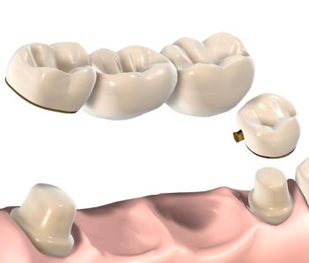
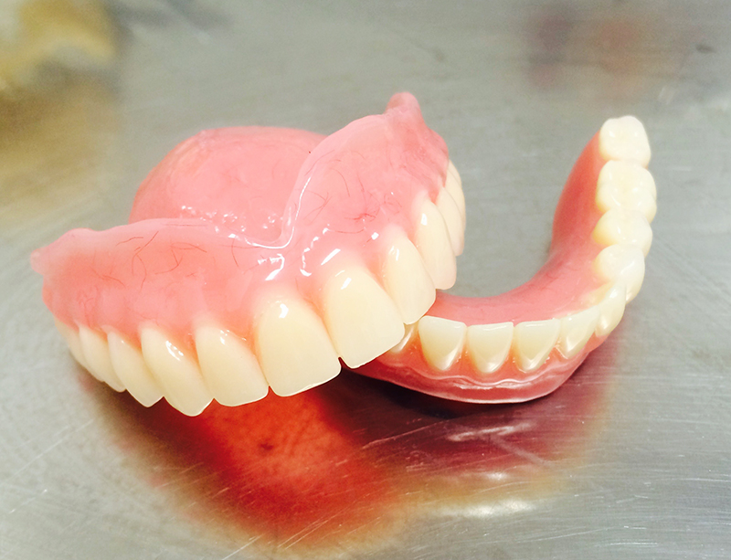
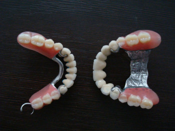
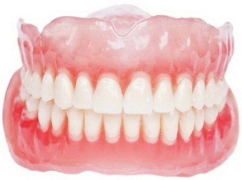
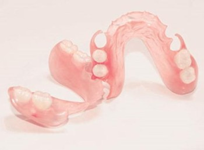
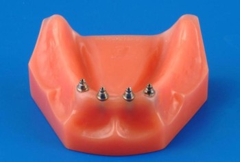
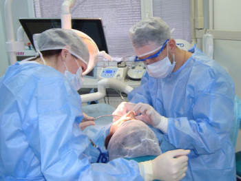

ООО СФ «Скорпион» сегодня предлагает достаточно широкий выбор методов решения протезирования зубов. Возможность нашей зуботехнической лаборатории позволяет изготовить даже сложнейшие работы, используя разные материалы и технологи.

Несъёмное протезирование
В ООО «Стоматологической фирме «Скорпион» делают 3D-снимки на высококачественном и безопасном томографе PLANMECA.
Применяется для воссоздания зубного ряда при отсутствии одного либо двух зубов подряд, а также для придания новой формы зубам или изменения их цвета. Фиксация таких протезов постоянная, т.е. снять их без повреждения конструкции невозможно.
Изготавливаются они чаще всего из нижеследующих материалов:
- Сплавы металлов (золото-палладиевый, кобальто-хромовый);
- Керамика (диоксид циркония, реже – оксид алюминия);
- Металлокерамика – металлический каркас с керамическим покрытием.
Встречаются следующие варианты несъемного протезирования:
- Зубные коронки играют роль колпачка, который имитирует естественную форму зуба и цвет, а также восстанавливает физиологические функции (речь, жевание);
- Мостовидные протезы или мосты – комплекс из нескольких жёстко соединённых между собой коронок. Для опоры используются два специально обточенных собственных зуба, между которыми располагается медиальная часть, восполняющая отсутствие ряда зубов, но не более двух;
- Вкладки – микропротезы, которые восстанавливают форму и цвет жевательных зубов;
- Виниры (люминиры) не только восстанавливают разрушенный зуб, но и существенно улучшают его эстетический вид. Используются для восстановления передних зубов.
Главный минус несъёмного мостового протезирования – это необходимость обточки опорных зубов, которые могут быть абсолютно здоровы, и именно эти зубы воспримут всю нагрузку за недостающие.

Съёмное протезирование зубов.
Применяется при дефекте ряда зубов большой протяжённости (отсутствие более 2-3 зубов подряд). Чаще всего такое протезирование предлагается пожилым людям, имеющим большое количество недостающих зубов. Но иногда на съёмные протезы соглашаются пациенты, не желающие обтачивать здоровые зубы под опорные коронки.
Бюгельное протезирование.

Основано на использовании металлической дуги (от немец. «бюгель» – дуга) в качестве опоры протеза. Применяется при частичном отсутствии зубного ряда. Это самый популярный, физиологически и анатомически адаптированный вид протезирования. Этот тип протезирования – лучшая альтернатива мостовидному, которое не всегда бывает возможно.
Бюгельное протезирование может иметь несколько вариантов крепления:
- Кламмеры – представляют собой крючки из металла на концах дуги-основания протеза, которые зацепляются за основания опорных зубов. Такой вариант не совсем эстетичен и неудобен в ношении, но он – наиболее дешёвый.
- Аттачмены – представляют собой двойное крепление, одна часть которого находится внутри протеза, а другая – в опорных зубах. Это более комфортный и надёжный тип крепления, чем кламмеры.

Протезы из акриловой пластмассы.
Самый распространенный и дешёвый вид съёмного протезирования. Ещё лет двадцать назад это был практически единственный способ восстановления зубного ряда при полном или значительном его отсутствии. Акриловая конструкция полностью имитирует естественный зубной ряд.
Основное преимущество таких протезов – лёгкость в уходе. Нередко акриловые протезы ставятся лишь на время изготовления постоянных несъемных протезов.
Нейлоновое протезирование.

Гибкий нейлоновый протез - это альтернатива традиционным съёмным протезам из акриловой пластмассы и один из лучших протезов на сегодняшний день.
Приемущества нейлонового протеза:
- Эти протезы практически незаметны во рту (нейлон – это полупрозрачный материал);
- Маленький вес (благодаря легкости и прочности нейлона, удалось значительно снизить толщину базиса зубного протеза);
- Гибкость (эластичность) протеза (используется термопластичный розовый нейлон, который обладает высокой степенью эластичности);
- Гипераллергенность (не содержит мономера–метилметакрилата).
Способов крепления таких протезов во рту может быть два.
- Если протез замещает полностью отсутствующий ряд зубов, то он крепится на десне за счёт эффекта “присасывания” и дополнительно используются фиксирующие гели.
- Если же протез частичный и замещает лишь несколько недостающих зубов, то конструкция крепится нейлоновыми крючками на опорные зубы. Положительный момент такого крепления в том, что не нужно обтачивать опорные зубы.
Стоит отметить, что нейлоновые протезы легки, просты в использовании и гипоаллергенны. Кроме того, их не обязательно вынимать на время сна.

Имплантационное протезирование.
Протезы устанавливаются на специальные штифты (импланты), вживляемые в костную ткань челюсти. Имплант имитирует естественный зубной корень, на основе которого конструируется искусственный зуб.
Несъемное имплантационное протезирование.
Применяется при отсутствии одного или нескольких зубов. В десну вживляется титановый имплант, на котором затем закрепляется керамическая или металлокерамическая коронка.
При значительном или полном отсутствии зубов в кость десны вживляют несколько имплантов, на которые устанавливается несъёмный мостовидный протез.
Съёмное протезирование на имплантах.
При полном отсутствии зубов вживляются от 2-4 имплантов, которые помогут надёжно закрепить протез. Снимается такой протез самим пациентом без особых усилий.

Приемущества данного протезирования:
Удобство и эстетичность.
Если предлагается выбор между съёмными и несъёмными протезами, то чаще всего предпочтение по удобству и внешнему виду отдаётся второму варианту. Несъёмные протезы более естественно выглядят во рту и адаптация к ним происходит гораздо быстрее.
Надёжность и долговечность.
По сроку службы лидируют опять же несъёмные конструкции из металлокерамики – 10-12 лет. А использование сплава из золота и платины увеличивает этот срок до 15 лет. Протезирование металлокерамикой универсально, оно позволяет восстанавливать почти все дефекты зубного ряда с равным успехом и долгосрочным прогнозом.
|